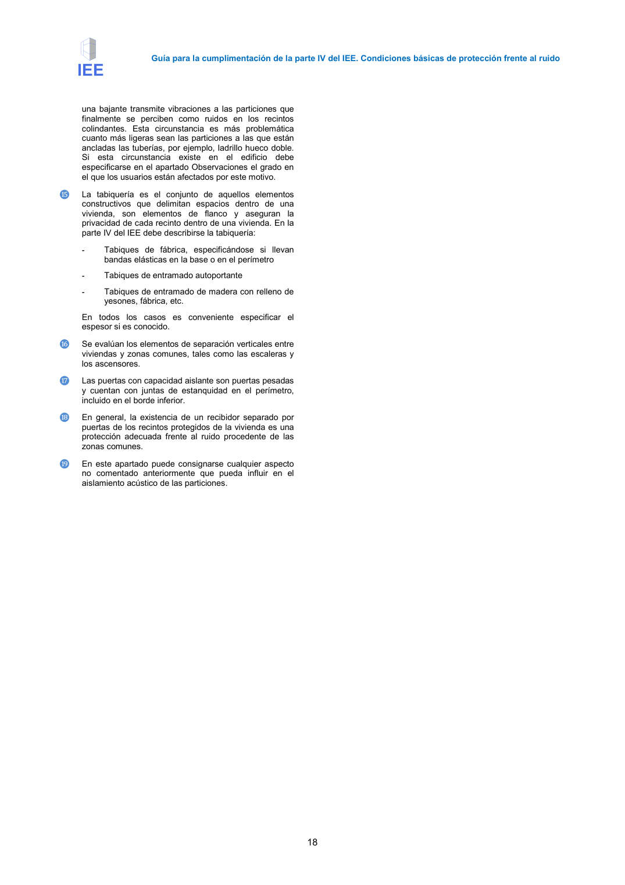

GUIA · Página 18 · versión 2016-11-01
SHA256: 813669d3066c0ff79457d57b80b0512a4fbb248bc5db1f7baf473c369a064738 · página física 18 de 65 · métodos de encabezado
solo si están cotejados.
Formatos: Markdown · JSON de bloques · PDF p. 18 · imagen PNG
Guía para la cumplimentación de la parte IV del IEE. Condiciones básicas de protección frente al ruido 18 una bajante transmite vibraciones a las particiones que finalmente se perciben como ruidos en los recintos colindantes. Esta circunstancia es más problemática cuanto más ligeras sean las particiones a las que están ancladas las tuberías, por ejemplo, ladrillo hueco doble. Si esta circunstancia existe en el edificio debe especificarse en el apartado Observaciones el grado en el que los usuarios están afectados por este motivo. ⓯ La tabiquería es el conjunto de aquellos elementos constructivos que delimitan espacios dentro de una vivienda, son elementos de flanco y aseguran la privacidad de cada recinto dentro de una vivienda. En la parte IV del IEE debe describirse la tabiquería: - Tabiques de fábrica, especificándose si llevan bandas elásticas en la base o en el perímetro - Tabiques de entramado autoportante - Tabiques de entramado de madera con relleno de yesones, fábrica, etc. En todos los casos es conveniente especificar el espesor si es conocido. ⓰ Se evalúan los elementos de separación verticales entre viviendas y zonas comunes, tales como las escaleras y los ascensores. ⓱ Las puertas con capacidad aislante son puertas pesadas y cuentan con juntas de estanquidad en el perímetro, incluido en el borde inferior. ⓲ En general, la existencia de un recibidor separado por puertas de los recintos protegidos de la vivienda es una protección adecuada frente al ruido procedente de las zonas comunes. ⓳ En este apartado puede consignarse cualquier aspecto no comentado anteriormente que pueda influir en el aislamiento acústico de las particiones.
